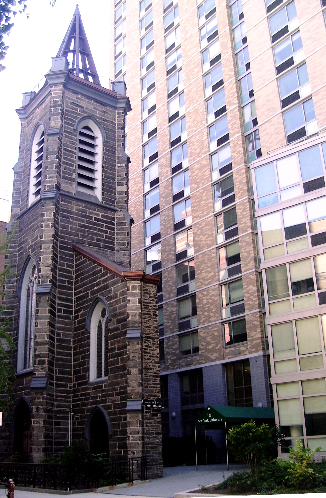

NYU Community
 Founders Hall
특징
120 East 12th Street에 위치, Union Square와 East Village 근처
26층 건물로, 700명 이상의 1학년 학생들이 거주
대부분 4인실 스위트 타입 (2개의 2인실로 구성)
워싱턴 스퀘어 파크에서 약 15분 거리
장점: 한국인들 많이 삼, H mart 가까움, 넓은 방
단점:공용 공간이 적고 주방이 없음
👍
← 메인으로 돌아가기